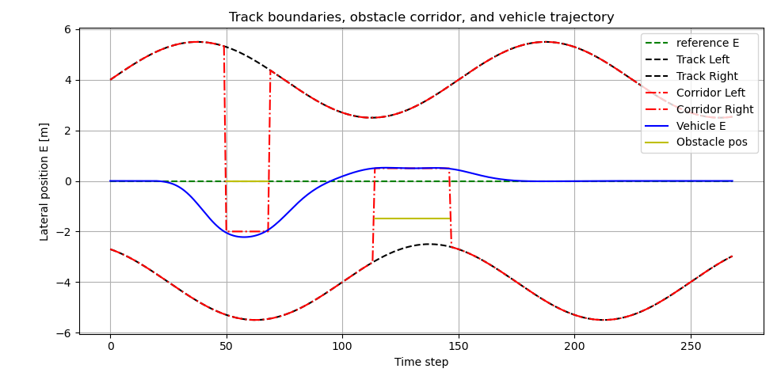
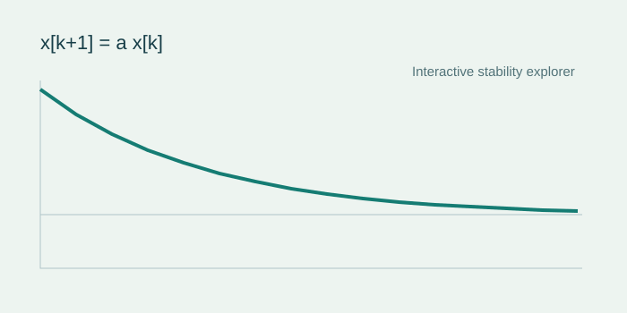

project · 2026-11-03
Exploring liquid and recurrent neural networks
Model implementations, examples and comparisons from liquid-nn-playground.
CODE · IDEAS · HOW-TO
A space for independent GitHub projects, ideas, tutorials and small interactive tools.
project · 2026-11-03
Model implementations, examples and comparisons from liquid-nn-playground.

project · 2026-11-03
An open-source implementation with CasADi and IPOPT, illustrated by track and control-signal figures.
tutorial · 2026-11-03
A short introduction to reference paths, predicted motion and constraints.

tool · 2026-11-03
Change one parameter and see convergence, oscillation or divergence in a scalar system.
No notes in this category yet. / Noch keine Beiträge in dieser Kategorie.